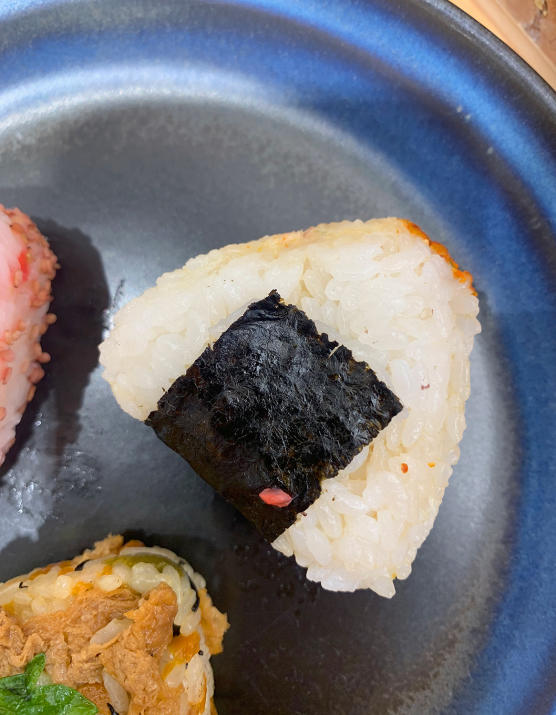

.svg)
Chez O-Komé, “le riz moelleux des onigiri à la douceurs régressive s’écrase sous la dent”
Chaque semaine, un journaliste raconte un produit ou une expérience gustative qui l’a marqué. Comme ces boules de riz, au menu de O-Komé à Lens, qui se mangent à toute heure au Japon.
Publié le 20 juin 2023. Par Clément Ghys
 Voir PlusDémonstration de cuisine afghane en partenariat avec France Horizon !
Venez participer à une démonstration de cuisine afghane avec Laila Mohammadi en partenariat avec France Horizon ! Cet événement est gratuit ! Mardi 20 juin, de 17h30 à 18h30.
Le 20 juin 2023, de 17h30 à 18h30

Restaurant l'Escargot
46 bis Rue de Famars, Valenciennes
réservation: +33 (0)1 234 567 890.
Prix moyen : Environ 35 euros par personne.

Restaurant sobre avec un menu local comprenant des entrées et des desserts originaux.
1 Pl. Sébastopol, 59000 Lille
Tel: 03 20 13 13 40

Décoré de raquettes anciennes et de photos, ce restaurant lambrissé propose des spécialités savoyardes.
43 Grand'Place, 62000 Arras
Tel: 03 91 79 81 45

Ambiance rustique pour cette chaîne de restaurants offrant des recettes variées autour de la pomme de terre.
53 Rue Saint-Pry, 62400 Béthune
Tel: 03 21 68 71 45
Camille Pailleau
Enfin un site qui met en valeur la richesse culinaire du Nord-Pas-de-Calais ! C'est une plateforme incroyable pour découvrir de nouveaux restaurants et s'inspirer de la diversité des cuisines locales.
19.5/20
Diego Delbecq
Un grand merci à ce site qui met en lumière les talents culinaires de notre région. Grâce à lui, j'ai pu gagner en visibilité et attirer de nouveaux clients dans mon restaurant.
19/20
Félix et Nidta Robert
Un grand bravo pour cette initiative qui met en relation les chefs et valorise le patrimoine culinaire de notre région. Longue vie à ce site !
10/10
Gérald Guille
En tant que chef, je trouve cette plateforme très utile pour découvrir les tendances culinaires de la région et connaître les restaurants incontournables à visiter.
9.7/10